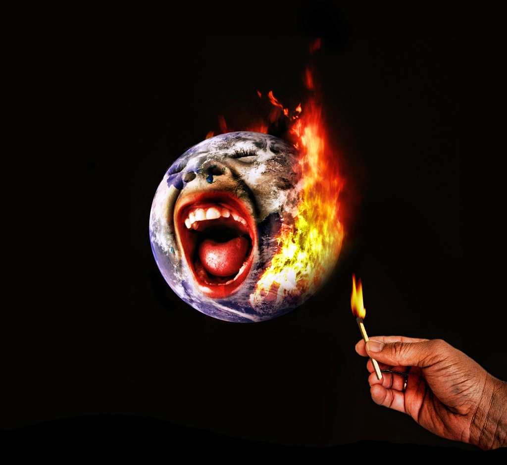
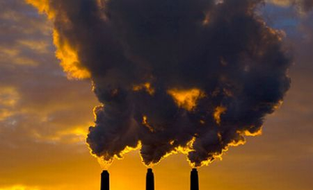
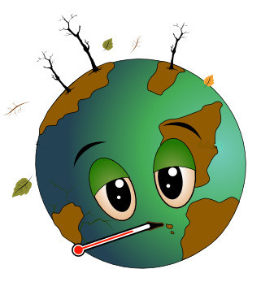

 O amprentă de carbon reprezintă o estimare a cantității de CO2 degajată în atmosferă prin activitățile unei persoane. Dacă ne măsurăm amprenta și încercăm să o reducem, noi și familia noastră putem începe bătălia cu încălzirea globală chiar de acasă. Dacă sprijini inițiativele care micșorează sau compensează folosirea carbonului, ai putea să-ți reduci amprenta de carbon până la zero.
Conservarea energiei este un mod simplu de a-ți reduce amprenta de carbon. Cei mai mulți irosim energie când ne încălzim, ne răcim și ne iluminăm locuințele și când folosim aparate și dispozitive electrice. Luarea unei măsuri simple, cum ar fi schimbarea tipului de becuri tradiționale și închiderea aparatelor când nu mai avem nevoie de ele, pot părea puțin importante, dar ne pot ajuta să reducem emisiile de gaze cu efect de seră.
Economisirea apei permite economisirea de energie necesară colectării, tratării și pompării ei. Dacă nu folosești multă apă poți reduce gazele cu efect de seră eliberate în atmosferă și poți luptă împotrivă încălzirii globale. Cantitatea de apă folosită diferă de la tară la tară, dar noi toți putem să ne asigurăm că nu risipim apa. 
Cea mai mare parte din deșeurile menajere ajung la gropile de gunoi solid. Aceste depozite uriașe de gunoi eliberează în atmosferă, când putrezesc, gaz metan - un gaz de seră. Un mod simplu de a micșora emisia de metan este să reduci cantitatea de gunoi produs și să reciclezi cât mai mult.
Fiecare poate lupta împotriva schimbărilor climatice, folosind mai puțină apă și electricitate. Dar dacă vrei să faci ceva semnificativ, poți să mergi și mai departe. Hainele pe care le porți, mâncarea pe care o mănânci și produsele pe care le folosești contribuie la crearea amprentei tale de carbon. Deciziile simple, de fiecare zi, pot face diferență în ce privește eliberarea de gaze cu efect de seră în atmosferă din cauza stilului tău de viață.
De acțiunea noastră în rezolvarea schimbărilor climatice depinde viitorul planetei noastre. Prin reducerea cantității de gaze cu efect de seră, prin dezvoltarea unei tehnologii noi și folosind surse de energii regenerabile, putem contribui la stoparea încălzirii globale. depinde de noi să protejăm lumea în care trăim.